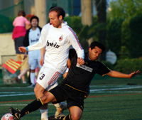
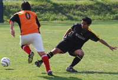
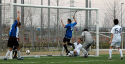
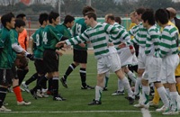

Old Buoys Show Better Buoyancy, But Dutch Sail Off with Points
Fukuda Denshi, Saturday, April 25th
If you've ever tried to watch water polo for more than five minutes without slumping unconscious with boredom, you'll know how ridiculous the spectacle of grown men trying to move a ball through a swimming pool can be. Nevertheless, a couple of dozen sodden berks travelled all the way out to the dark end of the Keiyo line last Saturday to spend a freezing cold ninety minutes splashing around in the shallow end of Fukuda Denshi's unheated outdoor pool, and though the Albion Old Boys' Medley team achieved several personal bests in the doggy paddle they were unable to cancel out the Dutch Embassy's first minute goal. more ...
TC
From Gelled to Jibberish!
YCAC, Wednesday, April 29th
This was the big one. Winner takes all, title decider, great weather, new pitch, big crowd, all we needed was to walk on the field holding hands and we’d feel like Brazil in a world cup. Then the whistle blew and that was pretty much that. A letdown that will sting for some time to come. But if there is one thing about sport - it teaches you to deal with your defeats and how to come back from them. After the Hibs had dominated the season in the 08/09 TML and still in the FJ cup, it seemed like we hadn’t lost a game since Sid had brown hair. more ...
BC
It's Not a Wrap. But it's all Wrapped Up.
 |
|
Leading scorer Tyson Masar (R) took his tally to 27 as YCAC became Div 1 Champs
|
YCAC, Sunday, April 29th
It's not really on to write a TML wrap up story before the season's ended, but let's face it YCAC 1st X1 wrapped up their season somewhat decisively by systematically dismantling Tokyo Hibernian FC. 4-0 was the final score in a game that saw YCAC go 3 ahead in the first half. Hibs had to take points from this game to keep any hopes of the title in sight but alas, it wasn't to be.
YCAC 1st XI will be the name inscribed on the Division One trophy and Hibs, once again left with an annoying sense of déjà vu, will be wondering what on earth happened as going into the second half of the season all smart money was on the little green men to triumph - but that's football. more ...
FJ
A Tale of 20 Throw ins!
|  |
|
Eric Follet rides the tackle of Romen the Merciless as Panthers beat Yabe 1-0.
|
YCAC, Wednesday, April 29th
Panthers started the match with 5 changes to the team that beat El Diego, but we showed our depth and how far we have come this season. It was a chance for some of the old skool Panthers folk to prove their worth and that they did!
It isn’t often you are thankful for rain but I know the Panthers were as we got to play on the lovely YC&AC pitch instead of the bog that is Misato. Still never look a gift horse in the mouth and off to Yokohama we went!
The gaffer sent us onto the pitch with his usual enigmatic words of wisdom. “Go out and play football” was one of the better ones, as at one point we were slightly confused at the sight of goals, a pitch and round balls that some say you kick! more ...
LR
Celts Pick Off Sala on the Counter
YCAC, Sunday, April 26th
Sala FC’s hopes of concluding the season at the dizzy heights of number 4 were severely dashed at the weekend by a typically stoic Kanto Celts performance – 2 goals carved out with minimum effort by the Celts prompted little response from a tired looking Sala. more ...
ST
Hamstrung Hero Hide Hammers Hattrick Hagainst Hapless Huguenots
YCAC, Saturday, April 25th
...and then there was one. Only one team stands between YCAC and its 1st TML title; our visitors this Wednesday night, The Hibs. Just three more points for all the marbles but anything less probably leaves the boys in Green as the 1st 3-time TML Champs. One of their final 3 opponents, Sala, Swiss and France would have to beat them if they take a point from Wednesdays showdown. Sala! How delicious a Sala win to give YCAC the title would be. Years of futility for us against them and them against Hibs (10-1 anyone?) banished by a single result. I might rename my 3 boys Guido, Toby and Brookey, or not. more ...
ST
Old Boys Survive Pub Time Kick Off
YCAC, Saturday, April 18th
For a team containing several players whose careers began before floodlights were invented, six o'clock on a Saturday night is a time to be in the bar talking bollocks about football, not out on the pitch playing bollocks at it. Nevertheless the Albion Old Boys managed to overcome this unwelcome disruption to their circadian rhythms and emerged from a hard battle against YCAC 2nds with a reasonably creditable 1-1 draw. more ...
TC
Sala - Geckoes Spoil the Shares
YCAC, Saturday, April 18th
In hindsight this 6 goal thriller seemed to be the inspiration behind the classic played out by Liverpool and Arsenal earlier this week. There were thrills, spills, great goals and foul mouths galore.
Right, I’m going to get my managerial excuses out of the way nice and early. In the week leading up to this game, we lost players for all kinds of unimaginable reasons. The last one being on the day of the game with Yusuke getting struck down by food poisoning. So into the game we went with 12 men. more ...
IJ
Panteras Venció El Diego
Nagahama, Saturday 11th April
Our illustrious leader Romen Benitez goes to extraordinary lengths for his team. Some call him mad, we call him dedicated! Still he managed to hire a mini bus for the team outing to the Marino’s training ground. I call that dedication (madness), either that or the level of paranoia over team attendance is way too high! more ...
LR
Thrilla and Vanilla
Todoroki, Saturday 11th April
Little Danny boy is going back to Brighton on April 20th. Happy 420. But we know he will feel homesick away from his BFC family and he will be back soon. His last game for BFC was rightfully played on a teensy-weensy pitch that allowed shooting from virtually anywhere ensuring a ten goal thrilla akin to his beloved ‘Winning Eleven’ (That’s ‘Pro Evolution’ for those of you who don’t live in Japan). The three new cheerleaders that BFC recently recruited, whose combined age came to about 57 (seriously), seemed to enjoy every minute of it. Danny almost scored the goal of the game, but his 20-yard belter rattled off the underside of the bar with great fury and some suspect it could have crossed the line but the officials were nowhere close to judge. more ...
GK
Panthers Smoke Stoneds!
|  |
|
Panthers captain Romen lets a Stoner past, but promotion is still in sight for Panthers.
|
Todoroki, Saturday 11th April
Grass, Grass, Grass, what else could we play on when faced with the Stoneds? A beautiful day awaited us at Todoroki grass pitch, sadly we found the pitch to be slightly narrower than usual due to some reseeding, the pitch looked like it had gone on some kind of crash diet, long and really thin. Still it was a grass pitch and its silky surface was great to play on!
Stoneds started the match with 9 players and keen to take the advantage the Panthers took shots from all ranges, long, short, and medium I guess! headers, volleys, but we couldn’t quite get the ball in the net. more ...
LR
Sala Thump BEFC, Continue Winning Streak
Fukuda Denshi, Sunday 5th April
After a good natured and fair match (excluding the copious amounts of 2nd half thumb wrestling, shirt tugging and man sandwiching) Sala ran out convincing 5-1 winners against a spirited BEFC outfit with a fine hatrick from Tobias Long, and one apiece from fellow strikers Sam Matthews and Rob Harlow. BEFC scored a consolation penalty, won and scored by their unnamed substitute. more ...
ST
10-Man Maritizio Emerge Victorious from Heat of Dutch Oven
 |
|
Stand-in Maritizio keeper David Blanco is quick off his line to block So Takada.
|
Misato, Sunday 5th April
Maritizio FC showed their mettle by digging deep against a capable Dutch Embassy side to record a controversial but memorable victory on the Misato marshland that continues an impressive record of three wins in the last three games for 'Tizio.
There was little between the teams in the opening 20mins with both playing a cagey midfield game, but if anything, the Dutch made the better start with numerous assaults on a Maritizio defence that looked to be struggling to rouse themselves from Sunday morning snoozes in the face of such lively opposition. more ...
CT
Slumping Match Reporter Fails to Deliver Catchy Headline
|  |
|
Albion celebrate an equalizer for 2-2 but it wouldn't be enough against a skillful JETRO squad.
|
Fukuda Denshi, Saturday 4th April
Well I don't know what the Albion Old Boys had done in the past to upset Jetro FC, but the Japanese team must have some axe to grind into the gnarled skulls of the Aging Masters of the Beautiful Game. Or maybe they just get turned on by giving geezers a hard time. How else to explain how a team with only three wins out of fifteen games could give the Albion their toughest game of the season and put the Old Boys on the wrong end of a 4-3 scoreline in a highly entertaining encounter. more ...
TC
Celts Slow Hibs March
|  |
|
Hibs & Celts square up for a stalemate.
|
Fukuda Denshi, Saturday 4th April
Traditionally, this fixture involved more red cards and battle scars than goals. But with all the Irish decked out in hoops they would have to wait till after a few more Guinness before the fighting would kick off. As with the Premiership the mass importing of foreigners has diluted the local derbies, here the influx of locals has dampened the rivalry but increased the skill level. The Celts were looking to end a bad run of two straight defeats against top four teams and there are none harder in the league to face at the moment. Hibs with a bus load of skilful, fit and fast Japanese players complimented by sturdy Americans have dominated the league from the start. more ...
GD
 |
|
Masaki Sakai battles to keep the ball from the King George defence
|
King George Slain by Panthers
Misato, Saturday 5th April
Feeling pretty sick after back to back nomihoudais, the only consolation on Sunday morning was that full-back Lee was driving and giving me a lift to the wind funnel of Saitama and Misato. After watching the end of the eventful Maritizio vs Dutch game we finally kicked off, and the ref was in for a much more peaceful game. Once again the pitch was dusty and the bounce uneven. A gust of wind swept sand into our eyes as we lined up, fitting for what was to come.
Panthers started with 5 changes from last week's win against Shane, but it seems that we finally have some strength in depth and we were confident that we could make this 9 unbeaten in Division 3 with the players we had out. ... more ...
RB
|